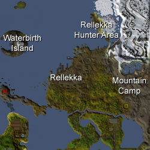
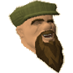
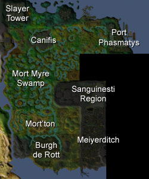
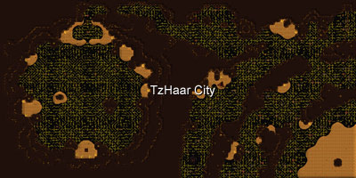
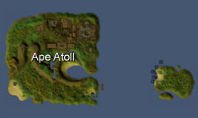

")
The Races of RuneScape
Introduction | Humans | Dwarves | Gnomes | Vampyres | Trolls | Goblins | Fairies | Ogres | TzHaar | Monkeys | Elves
Introduction
Across the many thousands of years of life on RuneScape there have been many races, some wiped out by their enemies or destroyed at the whim of the gods during the horrific God Wars of the Third Age. This cycle of warfare and conflict means that the races that cover the surface of the world - and those that fill the tunnels beneath the surface - are hardy and adaptable peoples who have developed over centuries to fill their particular niche as no other race can.
Humans


Misthalin

Misthalin is a nation split quite evenly in two. The population outside Varrock is predominantly agricultural, and provides a great deal of food for the capital and for sale to other, poorer nations. The people of the capital, though, are largely tradesmen and artisans, who work with raw materials to produce something more immediately useful. This split in society may seem to work effectively, but the problem can be seen most clearly in the southern parts of Varrock. This is where the rural citizens who have come to the capital frequently end up, unskilled and naive, living off scraps and dressing in the rags of clothes discarded by the wealthy.
Asgarnia

The White Knights have another foe: the Black Knights. These dark warriors adore havoc and death, and from within the hellish depths of their caverns and the fortifications of their castle they reach out to strike against the White Knights.
The majority of Falador's population is oblivious to this, of course, and are more involved in their own quiet business. In Port Sarim this can involve anything from trading in contraband goods to swapping tall yarns from long years spent at sea; in Taverley, where the druids gather to worship Guthix, most of the trade is in herbs and potions; the dwarves, with their extensive tunnel networks beneath Asgarnia, are openly accepted into Asgarnian society - especially when they bring their ores and their inventions to market.
Though Asgarnia may be a quiet nation, for the most part unbothered by its neighbours, there is within its borders a growing cluster of malcontents and misanthropes, practitioners of the dark arts and those who worship Zamorak. This is the true threat to Asgarnia: the walls of Falador may not fall, but this may only be because the peril comes from within.
Kandarin

On top of the feuding of the two kings of Kandarin, the lands themselves are oddly perforated with the outposts and settlements of other races. South of Ardougne is the Tree Gnome Village, an odd maze designed to protect the gnomes within from invasion. Still further south, past Yanille, are the ogre city of Gu'Tanoth and the Feldip Hills; ogres have little concept of borders, though, and can be found in their small tribes dotted around the fields near Yanille.
Despite the odd characteristics that seem to govern Kandarin, it is a wealthy nation and easily as powerful as Misthalin. Ardougne's wealth is supported by the various industries of Yanille, Seers' Village and Catherby, as well as by trading with the other nations around and within Kandarin's borders. There are even rumours that Kandarin has connections with the mysterious lands west of the mountains, where no human has set foot since the God Wars.
The Kharidian Desert

The Kharidian Desert is actually composed of two nations, which is apt as the lands north of the Shantay Pass are both more civilised and more agreeable to unprepared travellers. The city of Al Kharid is ruled by the Emir, though no one has seen him in public since his only son, Prince Ali, was kidnapped. Now he leaves much of the duty of running his small nation to Chancellor Hassan.
The lands south of the Shantay Pass are a constantly shifting and changing morass of sand that bears more in common with the tides of the sea than with any land. Thousands have lost their way (and, hence, their lives) within this place, but the sands shift again and their bones are buried for centuries, only to be unearthed, polished and gleaming, for the jackals to gnaw upon.
There is civilisation here, though, and an ancient one it is. The twin cities of Menaphos and Sophanem rule their lands with the priesthood, worshipping the same deities they have for as long as they have been there. In the western desert is a collection of less orderly places. The Bedabin nomads obey no rule except their own, as do the bandits; the Bedabin, though, are friendly and hospitable people, while the bandits spend much of their lives practicing how to slit throats.
The Fremennik Province

Despite their obvious martial prowess, the Fremennik dislike magic in all its forms, and have a long history of fighting their erstwhile cousins on Lunar Isle.
The Fremennik rule their lands and their waters more completely than any other human nation, for no significant settlement of any other civilised race can be found within their borders.
Miscellania and Etceteria

Karamja

There is evidence of a dark history in Karamja, as the natives know when they speak of the broodoo victims whose death-sleep is as restless as they might expect in Morytania. There are caves and tombs deep in the earth, and mighty beasts that appear once in every few years to terrorise the human population. Karamja may be an island overflowing with untapped wealth, but it is a hard road for anyone who wishes to harness it.
Karamja also plays host to one of the strangest of the races of RuneScape, for beneath the volcano is carved the TzHaar city, where stone and fire find a bizarre life.
Entrana

Dwarves


The dwarves of RuneScape are an especially economically aware race, as visitors to Keldagrim will notice when they first view the impressive trading floor in the Consortium's Palace. The Consortium, who rule the dwarves, are the most powerful of the dwarven corporations and their wealth is beyond compare even among other races. This is no real surprise, of course, for the dwarves have been mining for gold and precious stones and metals since well before humans abandoned their nomadic existence.
Keldagrim

Keldagrim is connected to the rest of the dwarven nation by means of an extensive mining cart network, the swiftest and most efficient way to get from point to underground point.
The city itself is split in two, with the wealthy elite living upon the western bank, while the poor workers who labour for the great corporations of the Consortium live on the eastern bank. The eastern bank, as you might expect, also plays host to the massive furnaces and other loud, polluting equipment, as well as a variety of unsavoury characters and dodgy bars.
Gnomes


The Tree Gnome Stronghold

When at home, though, the gnomes of the Stronghold are keen sportsmen and can frequently be found watching or playing gnomeball, their national sport. They also enjoy indulging themselves in the bars and restaurants, though their particular idea of delicacy is often too 'rich' for human tourists.
Vampyres
![[image]](../../img/main/kbase/npc/chathead/vampire.gif) There is little that can be said about vampyres that is not either pure myth or proven terror. It is a dubious assumption that these dark rulers of the lands of Morytania were once human, as they are so filled with hate and malice that they are essentially no more similar to humans than they are to unicorns. The vampyres rule over Morytania with an iron fist and with blood tithes that all the mortals of that land must submit to.
There is little that can be said about vampyres that is not either pure myth or proven terror. It is a dubious assumption that these dark rulers of the lands of Morytania were once human, as they are so filled with hate and malice that they are essentially no more similar to humans than they are to unicorns. The vampyres rule over Morytania with an iron fist and with blood tithes that all the mortals of that land must submit to.
Morytania

Canifis is a town that, for the most part, looks little different from any other across the border in Misthalin. Later, under the full moon, though, travellers see that its entire population is of werewolf stock. Because of this, the people of Canifis - unlike the people elsewhere in Morytania - like having the vampyres ruling them.
Port Phasmatys is a tragic town doomed by its own determination. When Lord Drakan came to them demanding blood tithes, the people of the town turned to a stranger, Necrovarus, in a dark pact that has doomed them all to an eternity without rest.
The warriors buried in the barrows were once great heroes of the human nations to the west, but now, buried in soil stained with the evil of the Sanguinesti region, they rise again as bitter shades to defend their tombs from thieves and adventurers.
Trolls
![[image]](../../img/main/kbase/npc/chathead/troll.gif) Of all the races of RuneScape, few are as unintelligent as the troll. The trolls have a remarkable lack of rational intellect, but this does not seem to have held back their advancement, much to the puzzlement of the scholars in Falador and Burthorpe who have been studying trolls for many decades. All that any of them can figure is that trolls need no intellect because they are simply massive and durable enough. After all, if they don't know they have a problem they don't need to fix it, right?
Of all the races of RuneScape, few are as unintelligent as the troll. The trolls have a remarkable lack of rational intellect, but this does not seem to have held back their advancement, much to the puzzlement of the scholars in Falador and Burthorpe who have been studying trolls for many decades. All that any of them can figure is that trolls need no intellect because they are simply massive and durable enough. After all, if they don't know they have a problem they don't need to fix it, right?
The Troll Country

Troll society is governed in much the same way that human schools are ruled: the larger and more arrogant the troll, the more power it wields - it could be said that trolls are a race of bullies. Of course, not all trolls are like this, just as some are significantly more intelligent than the majority.
Trolls are most often named for the first thing that it eats (or, if they do not know what to call that first meal, they may be named for the noise the meal made). This method of naming can have some fairly amusing results, but trolls are not noted for their sense of humour, so it's best if you keep the joke to yourself.
Goblins
![[image]](../../img/main/kbase/npc/chathead/goblin_1.gif) Most of the goblins that the humans of RuneScape are familiar with are those goblins that cover the surface of the world. There are few places goblins cannot be found, but there are also few goblins that could not be described as stupid. The Dorgeshuun tribe of goblins are the notable exception to this, as they have been separated from the main goblin race since the times of the God Wars. The Dorgeshuun have since then been hiding themselves away in their underground city, Dorgesh-Kaan.
Most of the goblins that the humans of RuneScape are familiar with are those goblins that cover the surface of the world. There are few places goblins cannot be found, but there are also few goblins that could not be described as stupid. The Dorgeshuun tribe of goblins are the notable exception to this, as they have been separated from the main goblin race since the times of the God Wars. The Dorgeshuun have since then been hiding themselves away in their underground city, Dorgesh-Kaan.
![[image]](../../img/main/kbase/npc/chathead/goblin_2.gif) Were it not for their remarkable stupidity, the common goblins of the surface could cause extreme problems for the human civilisations. The Dorgeshuun, who are nowhere close to as stupid or inclined to bickering as normal goblins, are opposed to violence of all forms. They do not trust humans, though, and it is a rare human that has seen their mines or had anything approaching a decent conversation with them.
Were it not for their remarkable stupidity, the common goblins of the surface could cause extreme problems for the human civilisations. The Dorgeshuun, who are nowhere close to as stupid or inclined to bickering as normal goblins, are opposed to violence of all forms. They do not trust humans, though, and it is a rare human that has seen their mines or had anything approaching a decent conversation with them.
Fairies
![[image]](../../img/main/kbase/npc/chathead/fairy1.gif) Though almost the entire population of RuneScape is unaware of them, the fairies are the beings that ensure that RuneScape's seasons are generally regular. Without the fairies crops might fail and the winter sky remain its dull grey a few weeks longer. Though most people happily deny that fairies exist, they are certainly an important race in RuneScape.
Though almost the entire population of RuneScape is unaware of them, the fairies are the beings that ensure that RuneScape's seasons are generally regular. Without the fairies crops might fail and the winter sky remain its dull grey a few weeks longer. Though most people happily deny that fairies exist, they are certainly an important race in RuneScape.
Zanaris

The fairies in Zanaris live in small houses high above the ground. Curiously, though, they conduct their business at ground level. Whether this is because they expect travellers from other worlds, or they simply prefer to keep their home and business lives separate is anyone's guess. One certainty, though, is that no human can ever hope to fully comprehend the way a fairy's mind works.
Being an intersection between a number of worlds, the markets of Zanaris offer a selection of equipment enviable in the 'real world' of RuneScape. Of course, this position between realms comes at a price, and Zanaris is constantly in danger from these other realms.
Ogres
![[image]](../../img/main/kbase/npc/chathead/skrach_uglogwee1.gif) Ogres, like trolls, are noted more for their physical strength than their intellectual might. They are about as stupid as trolls, but they are certainly much more imaginative. The ogres of the Feldip Hills live in a tribal system, ruled over by chieftains and, above even them, the shamans that live in the Enclave within Gu'Tanoth.
Ogres, like trolls, are noted more for their physical strength than their intellectual might. They are about as stupid as trolls, but they are certainly much more imaginative. The ogres of the Feldip Hills live in a tribal system, ruled over by chieftains and, above even them, the shamans that live in the Enclave within Gu'Tanoth.
The Feldip Hills

Further, for reasons few scholars have even attempted to fathom, ogre society is physically split between the males, who live predominantly in Gu'Tanoth, and females, who live solely in and around Oo'glog. The most reasonable assumption anyone has come up with is that ogre women terrify the males so much that they have driven them to seek solace among the rocks and dragon-filled caverns of Gu'Tanoth.
The TzHaar
![[image]](../../img/main/kbase/npc/chathead/tzhaar_1.gif) The volcanic folk that live beneath Karamja Volcano are surprisingly friendly and, though they have a wide variety of some of the finest weapons in existence, they seem completely uninterested in military might or expanding their borders. Some scholars doubt the TzHaar's goodwill, though, and the publishing houses are often found printing pamphlets warning of the dangers beneath Karamja.
The volcanic folk that live beneath Karamja Volcano are surprisingly friendly and, though they have a wide variety of some of the finest weapons in existence, they seem completely uninterested in military might or expanding their borders. Some scholars doubt the TzHaar's goodwill, though, and the publishing houses are often found printing pamphlets warning of the dangers beneath Karamja.
The TzHaar City

The TzHaar use a currency called TokKul; these odd shards of obsidian have little value in the outside world, but to the TzHaar - who have no interest in gold - it is the only currency worth using.
Monkeys
![[image]](../../img/main/kbase/npc/chathead/awowogei.gif) Most of the monkeys that any traveller is likely to see are small and insignificant, with nothing approaching a society to speak of. The monkeys of Ape Atoll, though, have established a highly ordered and insular society, complete with an army that any nation would be proud to have. Some of the ruling monkeys are greedy, though, and likely to lead their people into messy wars with no beneficial outcome.
Most of the monkeys that any traveller is likely to see are small and insignificant, with nothing approaching a society to speak of. The monkeys of Ape Atoll, though, have established a highly ordered and insular society, complete with an army that any nation would be proud to have. Some of the ruling monkeys are greedy, though, and likely to lead their people into messy wars with no beneficial outcome.
Ape Atoll

Elves
![[image]](../../img/main/kbase/npc/chathead/elf.gif) Among the longest lived of all the races of RuneScape, the elves have watched the God Wars come and go, and watched as other races were destroyed. Because they retreated beyond the mountains so many years ago, there are few scholars who know very much at all about the elves, and fewer still who are correct. The elves worship a strange deity called Seren, who communes with the crystal seeds that the elves use to build almost everything. Their society was riven several centuries ago, though, and now skirmishes often break out within the forest of Isafdar as the rebels fight to reclaim their lost lands.
Among the longest lived of all the races of RuneScape, the elves have watched the God Wars come and go, and watched as other races were destroyed. Because they retreated beyond the mountains so many years ago, there are few scholars who know very much at all about the elves, and fewer still who are correct. The elves worship a strange deity called Seren, who communes with the crystal seeds that the elves use to build almost everything. Their society was riven several centuries ago, though, and now skirmishes often break out within the forest of Isafdar as the rebels fight to reclaim their lost lands.
Tirannwn

The main settlement of elves is Prifddinas, a mighty city that dates from thousands of years ago, and is grown from crystal seeds. Although no human has ever entered its walls, there are rumours of its beauty and the genius of its architecture - rumours which are repeated throughout every text on elven culture that has survived to make it to Varrock.
The rebel elves make a point of moving about, though their current settlement - the lodge at Lletya - has been a reliable base for some time now. No human knows how the civil war began, but all scholars agree that this could easily be the end of this once powerful race.

More articles in
Miscellaneous Guides
|
|
|
Further Help
If this article does not help you, you may find the following sections of the RuneScape site helpful:
|
|